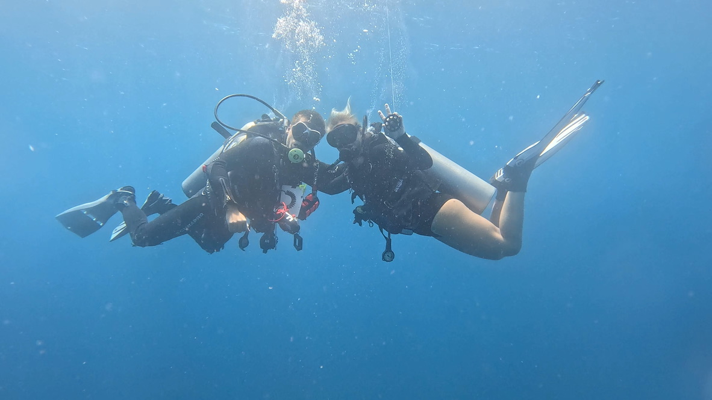
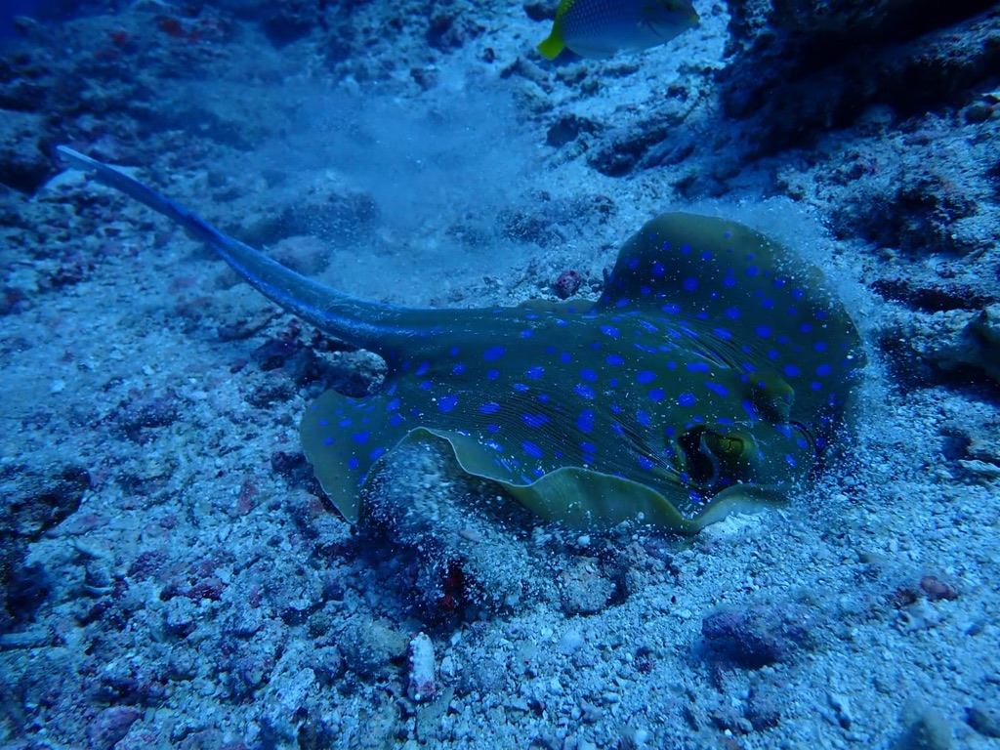
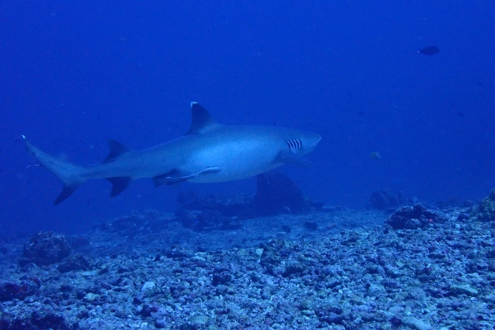
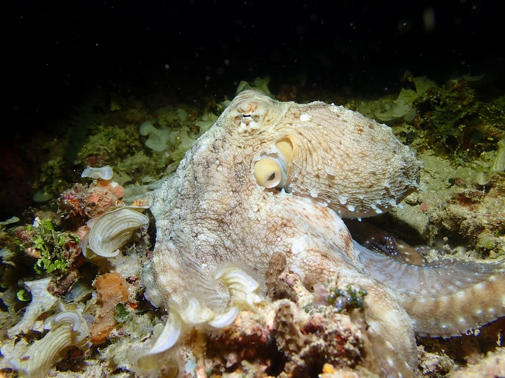

About Me
Hi! I am Brooke Holiday. I grew up in Wyoming, Colorado, and California. I have four older sister and a little brother and am an aunt to four nibings! I am entering my sophmore year at Brigham Young University, where I plan to major in finance and will be recruiting for investment banking this fall.
Hobbies
I love doing anything outdoors. Growing up near Yellowstone National Park inspired me to visit all U.S. national parks. My favorite natinal park is Yosemite, which I saw during Firefall, and hope to return to hike Half Dome.
- Watercolor painting and sketching
- Photography
- Hunting
- Scuba diving
Scuba Diving
I first scuba dived when I was eleven. Last year I completed my Divemaster certification, including rescue training. I love guiding dives and sharing the underwater world with others. My favorite sea animal is the juivinelle boxfish! So I made this game:
Best Dive Sites in Gili Air
Halik Reef
Baby white tip reef sharks in the shallows and rays in deeper water.

Secret Gardens
Beautiful coral formations and occasional eagle rays.

Shark Point
Advanced dive with a shipwreck at 30 meters. Strong currents, but incredible marine life: sharks, turtles, cuttlefish, and rays.

Night Dive at Hans Reef
A must-do experience. See eels, octopus hunting, squid, nudibranchs, and bioluminescent plankton.
